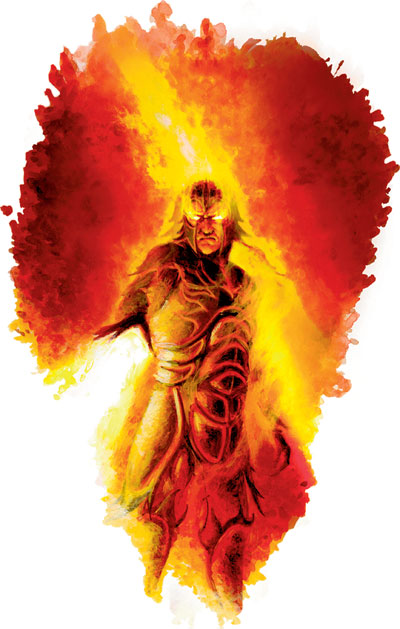
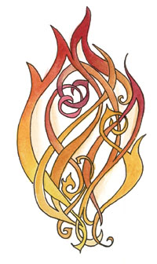

卡署斯 Kossuth（火元素之神）

费伦神系 强大神力
别称：烈焰之王 The Lord of Flame、火之王 Firelord
圣徽：

居住界域：火元素界 Elemental Plane of Fire
阵营：绝对中立 N
神职：火元素 Elemental Fire，以火净化 purification through fire
信徒：德鲁依，元素使者，火系生物，塞尔地区
牧师阵营：守序善良 LG，中立善良 NG，守序中立 LN，绝对中立 N，混乱中立 CN，守序邪恶 LE，中立邪恶 NE
神域：火焰 Fire，毁灭 Destruction，复苏 Renewal，折磨 Suffering
喜好武器：烈焰之舌（刺链）Tendril of Flame（spiked chain）
卡署斯是火元素生物的守护神，那些爱上火焰的繁复舞姿及毁灭威力的凡人也奉�k为尊－不过�k对自己在�O瑞尔世界的信徒不怎么重视。虽然如此，�k频繁地奖赏凡人信徒，使�k的信徒数量在费伦大陆上以令人担忧的速率急速成长。这位来自遥远异界的外来神�o似乎对自己的信徒与教会另有计划－或许唯有�k的最高祭司才能洞悉部分奥秘。对虔诚的信徒们来说，卡署斯代表着纯净的烈焰、促进发明革新的灵感火花、调和理性的力量、以及一切激情的核心。他们尊火焰为最重要的元素，有时 甚至为了证明它的至高性而作出危险致命的举动。卡署斯常被描述为一团向上猛烈燃烧的巨大火柱。
在整个费伦大陆上，火之王的神殿积极地招募 信徒，对象多半来自贫苦与心怀不满的中下阶层。火之王的信仰提倡藉由自我抑制而获得净化，往更高的层次迈进。新进信徒们会承继这种禁欲苦修的生活方式，并冀望能在招募到其它新进信徒之后，在教会内获得更高的等级（被称为"阶"，terrace）。每一阶都能获得比前一阶更多的享受，鼓励低阶的成员们更加努力地为信仰献身－以求晋升下一阶。随着每一阶的奖赏愈加丰厚，伴随的风险也愈来愈高－许多信徒时常在展现火焰的可怕威力时，连自己的性命也一并赔进去。但 这类的死亡事件在其它信徒们的心中很难造成恐惧－只因他们相信，如为卡署斯服务时能死于烈焰之中，往后便会成为尊荣的战士继续为�k服务。
许 多心怀疑虑的外人将卡署斯的教会视为神秘又复杂的组织，认为他们一昧地招收胸怀热枕的新信徒，另一方面却又闪避着外界的批评与检视。这些人嘲弄卡署斯教会 中低阶成员的高死亡率，暗示高阶成员们蓄意派遣低阶信徒们去执行自杀任务，以便自己能瓜分享用教会的资源。但贫困者（低阶的大部份成员）愤怒地否认此类指摘－对他们来说，卡署斯教会提供了往上爬的路径，只要熬过艰苦，就可以得到大量的财富与声望。
卡署斯的牧师可自行选择在日出或正午时进行 祈祷，以获得神术。他们认为神圣的火焰源自南方，因此所有的祈祷与仪式皆面朝此方。各个神殿的信众与牧师尊其最高祭司的出生之日为圣日，在当天点燃巨大的篝火，且进行大规模的献祭。每当一位牧师提升等级、或在教会之内的位阶上升时，都必须经历一个名为「火行之誓」（the Oath of Firewalking）的秘密仪式－赤脚踩过承满燃烧煤块的火盆。牧师们常兼职成为不同结社的武僧（依阵营而有不同，详见下述）；有些会兼职成为法师或术士，钻研火焰魔法；另有少数则是兼职成为元素使者（Elemental Archon，另文介绍）。
历史/与众神的关系 History/Relationship：
自 整个多重宇宙（Multiverse）诞生的一刻起，一位名为卡署斯的至上强大元素就开始掌管着有关火焰的一切－然而，凡人们已无法得知目前这位卡署斯是 否仍是那位原初的存在，亦或只是在漫长时间中另一位名号类似的取而代之者。烈焰之王极少插手凡人世界的事务，�k大部分的注意力都放在内层诸异界的无尽斗争之中。在-150DR时，一群强大的罗曼萨（Raumathan）法师将�k从原居界域召唤至凡间，试图命令火之王摧毁正围困他们的宿敌－奈佛尔 （Nerfall）－的大军。卡署斯的确完成了这项要求－但�k随即将怒火转向这群法师，把他们的城市一并烧成飞灰－以惩罚这群凡人的傲慢自大。这场天罚怒火最后焚毁了阿兰勃内海（Alamber Sea）北部的的大多数沿岸地区，甚至在�k离开�O瑞尔世界之后仍熊熊燃烧了十年之久。自该次事件之后，�k似乎便转移了一小部分心力开始注意凡人世界，在 1357DR那场毁灭性的「火蜥蜴战争」之中，�k在塞尔（Thay）的信众再一次将�k召至物质界－但却成功地并未酿成可怕的浩劫。在动荡时期（Time of Trouble）中，卡署斯并未如众神般在�O瑞尔世界中活动－这或许是因为�k设法逃过了AO的愤怒，或仅是在世界分崩离析时选择缄默。
卡 署斯那有关火之至高性的教义使�k无可避免地与其它元素神�o发生争斗－在其它元素之神中，烈焰之王最痛恨依斯提悉亚（Istishia），认为对方既可悲又 脆弱。相对地，水元素之王也驱策自己的信徒尽一切可能破坏卡署斯的计划，两边教会之间常爆发牵连甚广的公开战事。火之王与其它费伦众神皆无甚往来。虽然莫拉丁（Moradin，矮人主神）与弗兰铎�B钢肤（Flandal Steelskin，侏儒的冶炼之神）都尊敬�k在锻造时所能带来的热量，但�k极少向对方作出响应。不过，卡署斯对班恩（Bane）的回归颇感愉悦－这两位神�o似乎都同意严密阶级划分的重要性，也都无法容忍所有混乱那不可预期又短暂易变的本质。
教义 Dogma：
只有真正的 强者才配享有成功的一切。卡署斯的信仰在本质上就比其它所有信仰都要高级（尤其是依斯提悉亚的信仰）。火焰与纯净本为一体，烟尘只是大气忌妒的证据。心怀 抱负而成功者的奖赏就是更多的力量。要想晋升更高的阶级，就不可避免地必须克服艰难，并熬过某些个人的苦痛。卡署斯送下�k那纯净的火焰来净化我们、调和我们的灵魂，让我们能提升到更高的层次。随时准备接受试炼、迎接挑战－不论它将带来什么样的艰困或苦痛。那些在你之上的人已经证明了自己的能力与价值，因而 得以享用你的服侍。引导其它人一起领受卡署斯的纯净光辉，让他们也能将自己的生命重炼成更纯净的精华。
牧师与神殿 Clergy & Temples：
卡 署斯的牧师分为两种不同的宗派－「火舌」（Tandirls）与「火盆」（Burning Braziers）。前者占了教会中的多数，储备了绝大多数教会的力量。他们负责处理神殿日常各种事务、主持圣日与庆典、并向一般信众讲道。后者则是教会中负责出外探索与传教的分支，在荒野中四处旅行，为其它地区带去卡属斯那高热纯净的光辉。
这两个宗派都支持赞同严密的阶级制度。每座神殿 都由一位最高祭司（被尊称为「永恒之焰」，Eternal Flame）领导，而该地区所有的信徒都追随他－「火盆」宗派的成员则在旅程中遵循距他最近的一位「永恒之焰」指示。在「永恒之焰」之下则是许多不同的位阶，每一阶都对地位较低者享有支配权。在最低阶的信徒必须拒绝一切世俗的财富与享乐，将其全数贡献予高阶成员，仅留下维持生计所需的基本须求（对出外探索 的牧师而言，所谓「基本须求」包括防具、武器、以及魔法物品）。当一位牧师通过了艰难困苦（通常也十分危险致命）的信念试炼，位阶往上提升时，他就可以获得更多的权力与财富。
卡属斯的信徒中有许多狂热的策划者，希望能「净化」整个世界，再依火之王的意志将之重建。低阶的牧师很容易就会被影 响与操纵，大都很快地就会失去继续晋阶的热情与努力；而高阶的牧师则将手下视为可消耗的炮灰，不停地派他们去执行（需要更多装备与训练才能达成的）任务，以筛选出技巧与野心兼具的精英－只有这些人才配晋阶。所有卡属斯的牧师都有着易怒的脾性－他们很容易被触怒，并使用暴力贯彻自己选择的价值观。几乎所有牧 师的主要人生目标都是获取（更多的）领地、权势、力量，而教会所采取的种种行动也都或多或少与促进上述目标有关。
火之王的教会常夸耀旗下 所属的三个战斗武僧团，分别对应不同的守序阵营－「凤凰之徒」（Disciples of the Phoenix，善良）、「纯净烈焰手足会」（Brothers & Sisters of the Pure Flame，中立）、「火蜥蜴之徒」（Disciples of the Salamander，邪恶）。在塞尔地区，火之王的教会一直占有重要的一席之地，一部分原因或许正因为此乃非穆兰裔（Mulan）塞尔人能晋身高位的唯一管道。
卡署斯的神殿都采用多层宝塔式的建筑风格，对应着整个教会严密的阶级划分。这些壮丽的的建筑物通常都以凝固后的熔岩作为建材，且 整座神殿中到处都置放着火盆与熊熊燃烧的烈焰（由好几组低阶信徒负责保持圣火永不熄灭）。整个费伦大陆最豪华壮丽的卡署斯神殿，则当属位于塞尔地区拜占图城（Bezantur）的「炽焰圣塔」（the Flaming Brazier）。
--
资料来源：费伦大陆信仰与神系《Faiths & Pantheons》
译者：一凡